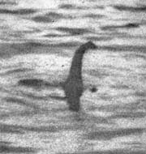
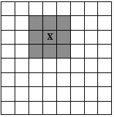

Given a grid of n rows and m columns representing the loch, 6
| Searching for Nessy |
The Loch Ness Monsteris
a mysterious and unidentified animal said to inhabit Loch Ness,
a large deep freshwater
loch near the city
of Inverness in northern Scotland. Nessie is usually categorized as a type of
lake monster.
http://en.wikipedia.org/wiki/Loch_Ness_Monster
In July 2003, the BBC reported an extensive investigation of Loch Ness by a BBC
team, using 600 separate sonar beams, found no trace of any ¨sea monster¨
(i.e., any large animal, known or unknown) in the loch. The BBC team concluded
that Nessie does not exist. Now we want to repeat the experiment.
Given a grid of n rows and m columns representing the loch, 6 n,
m
n,
m 10000, find the minimum number s of sonar beams you must put in the square such that we can control every position in the
grid, with the following conditions:
10000, find the minimum number s of sonar beams you must put in the square such that we can control every position in the
grid, with the following conditions:
For example,

where X represents a sonar, and the shaded cells are controlled by their sonar beams; the last figure gives us a solution.
The first line of the input contains an integer, t, indicating the number of test cases. For each
test case, there is a line with two numbers separated by blanks, 6 n,
m
n,
m 10000, that is, the size of the grid (n rows and m columns).
10000, that is, the size of the grid (n rows and m columns).
For each test case, the output should consist of one line showing the minimum number of sonars that verifies the conditions above.
3 6 6 7 7 9 13
4 4 12